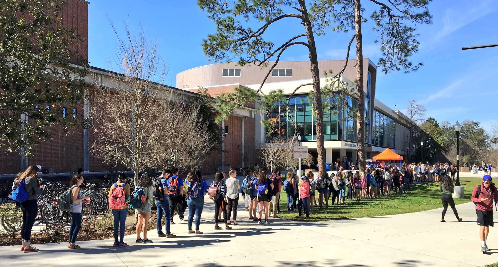

Gallery 1853
A campuswide photo contest on social that became a real art exhibition and ended with permanent work displayed in the President's Office and in a coffee table book.
A student sharing their love for campus reaches homes and hearts that haven't fallen for UF yet. They're the most authentic connector to the next generation of Gators. So we gave them a reason to share... and then we gave the best of what they shared a permanent home in the President's Office.
The contest
Students were invited to photograph campus life and submit their images under the hashtag #Gallery1853. Five categories gave the community a creative framework and a reason to look at their campus with a photographer's eye.


The gallery show
The campus community stopped by to study the work, cast ballots, take selfies with their favorites and in some cases, discover their own photo on display for the first time.

The coffee table book
All 25 finalist photos were compiled into a coffee table book gifted to a select group of major donors — a tangible artifact of the community's creativity presented to those supporting UF's rise in the rankings.


The permanent collection
The five winners were printed and mounted permanently outside the President's Office. Student photographs now hang in one of the most distinguished spaces on campus.



Gallery 1853 showed what social media can be when it's treated as a creative platform for the community rather than a broadcast channel for a brand. Campus didn't just engage, they told the UF story from their perspective to peers near and far.